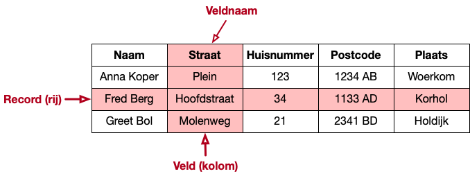

3. Selectie en projectie#
Als je het antwoord op een informatievraag zoekt in een database, dan moet je uit de gegevens in die database precies die elementen zien te vinden die antwoord geven op je vraag. Dit doe je met behulp van een database query (zoekvraag).
Voor relationele databases gebruik je hiervoor de query-taal SQL (Structured Query Language). Een relationele database bestaat uit een aantal tabellen die onderling naar elkaar kunnen verwijzen. Een tabel bestaat uit rijen en kolommen. De eerste stap bij het zoeken is de selectie van de juiste rijen; daarvan geef je alleen de kolommen weer die je nodig hebt voor het resultaat (projectie).

Als voorbeeld-tabel gebruiken we de Top2000 van de laatste jaren. Deze database bestaat uit één tabel.
3.1. Maak verbinding met de database#
De eerste stap is om verbinding te maken met de database.
Als je Basthon gebruikt. Laad het notebook tegelijk met de database (door het gebruik van de juiste URL). Je kunt de database ook later laden via het “File” menu. Zorg ervoor dat de database gekoppeld is vóór het uitvoeren van de SQL-opdrachten.
Als je Jupyter Notebook gebruikt. In dat geval heb je onderstaande opdracht nodig.
%LOAD data/top2000.db
3.2. Verken de tabel#
Met de volgende query verken je een klein stukje van de top2000-tabel.
Voor de cel hieronder uit door deze te selecteren (klik in de cel); geef vervolgens Shift-Enter in, of klik op het “run” driehoekje bovenin.
SELECT *
FROM top2000
LIMIT 5;
| top | positie | titel | artiest | jaar |
|---|---|---|---|---|
| 2015 | 1 | Imagine | John Lennon | 1971 |
| 2015 | 2 | Bohemian Rhapsody | Queen | 1975 |
| 2015 | 3 | Hotel California | Eagles | 1977 |
| 2015 | 4 | Mag Ik Dan Bij Jou | Claudia De Breij | 2011 |
| 2015 | 5 | Stairway To Heaven | Led Zeppelin | 1971 |
De SELECT opdracht heeft de volgende basisstructuur:
SELECT <kolommen>
FROM <invoer-tabel(len)>
WHERE <rij-voorwaarde>
ORDER BY <kolommen> [ASC|DESC]
LIMIT <aantal rijen>;
Uitleg. In het voorbeeld hierboven is het WHERE-deel weggelaten. Dat betekent dat de rij-voorwaarde TRUE is: alle rijen worden geselecteerd.
Op eenzelfde manier geeft de * achter SELECT aan dat het resultaat alle kolommen bevat.
De meeste onderdelen in de SELECT opdracht kun je weglaten, behalve SELECT en FROM.
Het LIMIT-deel beperkt het aantal rijen in het resultaat. Zowel de * als de LIMIT gebruik je vaak bij het verkennen van een database.
Let op: Een SQL-opdracht sluit je altijd af met een ;
Opdracht. Pas het aantal in het LIMIT deel aan, en voer de query opnieuw uit.
Het ORDER BY deel kun je de volgorde van de rijen in het resultaat bepalen; zonder sortering krijg je de volgorde van de rijen in de oorspronkelijke tabel. De resultaat-volgorde kan opklimmend zijn (ASC) of dalend (DESC). Voorbeeld:
SELECT *
FROM top2000
ORDER BY positie DESC
LIMIT 5;
| top | positie | titel | artiest | jaar |
|---|---|---|---|---|
| 2015 | 2000 | Bohemian Like You | The Dandy Warhols | 2001 |
| 2016 | 2000 | Politik | Coldplay | 2002 |
| 2017 | 2000 | I'm Every Woman | Chaka Khan | 1979 |
| 2018 | 2000 | Teardrops | Womack & Womack | 1988 |
| 2019 | 2000 | Suite: Judy Blue Eyes | Crosby, Stills & Nash | 1969 |
Opdracht. Pas deze query aan zodat deze de laagste noteringen weergeeft, in plaats van de hoogste.
3.3. Projectie van kolommen#
Uit de bovenstaande opdracht heb je geleerd wat de namen van de kolommen zijn in de Top2000-tabel. Dit kun je gebruiken om de kolommen in het resultaat te beperken tot die kolommen die je echt nodig hebt, zie het voorbeeld hieronder.
In de eerste regel, na SELECT, geef je aan welke kolommen in het resultaat voorkomen, en in welke volgorde. Dit noemen we ook wel projectie.
SELECT top, positie, titel
FROM top2000
LIMIT 5;
| top | positie | titel |
|---|---|---|
| 2015 | 1 | Imagine |
| 2015 | 2 | Bohemian Rhapsody |
| 2015 | 3 | Hotel California |
| 2015 | 4 | Mag Ik Dan Bij Jou |
| 2015 | 5 | Stairway To Heaven |
Opdracht Pas de code hierboven aan: kies een andere combinatie van de kolommen voor het resultaat. Verander ook eens de volgorde van de kolommen; of geef de naam van een kolom tweemaal op.
Vraag. Heb je ook een idee van de types van de kolommen? Welke kolommen bevatten getallen? Welke kolommen bevatten strings (tekenrijen)?
3.4. Selectie van rijen#
Je gebruik het WHERE-deel om op te geven welke rijen je in het resultaat wilt zien.
Alleen die rijen waarvoor de WHERE-voorwaarde TRUE is maken deel uit van het resultaat.
Voorbeeld:
SELECT *
FROM top2000
WHERE artiest = 'Queen'
LIMIT 5;
| top | positie | titel | artiest | jaar |
|---|---|---|---|---|
| 2015 | 2 | Bohemian Rhapsody | Queen | 1975 |
| 2015 | 38 | Innuendo | Queen | 1991 |
| 2015 | 65 | Somebody To Love | Queen | 1976 |
| 2015 | 74 | Love Of My Life | Queen | 1975 |
| 2015 | 97 | Don't Stop Me Now | Queen | 1979 |
Uitleg. Alleen die rijen waarvan de artiest-kolom de waarde 'Queen' heeft maken deel uit van het resultaat. Merk op dat we een string-waarde in SQL tussen '...' weergeven.
Opdracht. Maak een selectie van de rijen van een andere artiest.
Andere operatoren. De selectie-voorwaarde kan ook andere vergelijkingsoperatoren bevatten, zoals < of <= of > of >= of != (ongelijk). Voorbeeld:
SELECT *
FROM top2000
WHERE jaar < 1970
LIMIT 5;
| top | positie | titel | artiest | jaar |
|---|---|---|---|---|
| 2015 | 19 | God Only Knows | Beach Boys | 1966 |
| 2015 | 44 | The Sound Of Silence | Simon & Garfunkel | 1966 |
| 2015 | 48 | Hey Jude | Beatles | 1968 |
| 2015 | 50 | Paint It Black | Rolling Stones | 1966 |
| 2015 | 71 | Pastorale | Ramses Shaffy & Liesbeth List | 1969 |
LIKE met Jokers (wildcards). Soms weet je niet hoe een naam (string) precies gespeld is.
In dat geval kun je de LIKE operator gebruiken.
In LIKE '_an%Berg' staat de _ voor een willekeurig teken en % voor een willekeurige rij tekens (0 of meer).
Dit past bijvoorbeeld op 'Van den Berg', van de Berg, of van Berg.
Deze tekens komt overeen met de “wildcard” tekens
?en*in bijvoorbeeld de Unix/Linux shell.
SELECT *
FROM top2000
WHERE jaar = 1970 and artiest LIKE '%Beatles';
| top | positie | titel | artiest | jaar |
|---|---|---|---|---|
| 2015 | 51 | Let It Be | Beatles | 1970 |
| 2015 | 429 | The Long And Winding Road | Beatles | 1970 |
| 2015 | 1680 | Across The Universe | Beatles | 1970 |
| 2016 | 68 | Let It Be | Beatles | 1970 |
| 2016 | 598 | The Long And Winding Road | Beatles | 1970 |
| 2017 | 79 | Let It Be | Beatles | 1970 |
| 2017 | 727 | The Long And Winding Road | Beatles | 1970 |
| 2017 | 1756 | Across The Universe | Beatles | 1970 |
| 2018 | 53 | Let It Be | Beatles | 1970 |
| 2018 | 833 | The Long And Winding Road | Beatles | 1970 |
| 2018 | 1832 | Across The Universe | Beatles | 1970 |
| 2019 | 53 | Let It Be | The Beatles | 1970 |
| 2019 | 704 | The Long And Winding Road | The Beatles | 1970 |
| 2020 | 50 | Let It Be | The Beatles | 1970 |
| 2020 | 805 | The Long And Winding Road | The Beatles | 1970 |
Je ziet aan dit resultaat dat de namen van de artiesten niet altijd op dezelfde manier geschreven zijn. Datzelfde geldt overigens ook voor de titels van de nummers. Dat maakt het lastig om met de data te werken! Later zullen we proberen om deze data meer uniform te maken.
Samengestelde voorwaarde. Een selectie-voorwaarde (WHERE-voorwaarde) kan ook samengesteld zijn, met behulp van logische AND en OF operatoren.
Voorbeeld:
SELECT *
FROM top2000
WHERE positie < 30 AND jaar < 1970;
| top | positie | titel | artiest | jaar |
|---|---|---|---|---|
| 2015 | 19 | God Only Knows | Beach Boys | 1966 |
| 2016 | 18 | God Only Knows | Beach Boys | 1966 |
| 2016 | 23 | The Sound Of Silence | Simon & Garfunkel | 1966 |
| 2017 | 28 | The Sound Of Silence | Simon & Garfunkel | 1966 |
| 2017 | 29 | God Only Knows | Beach Boys | 1966 |
| 2018 | 26 | The Sound Of Silence | Simon & Garfunkel | 1966 |
| 2019 | 28 | The Sound Of Silence | Simon & Garfunkel | 1966 |
| 2020 | 23 | The Sound Of Silence | Simon & Garfunkel | 1966 |
3.4.1. DISTINCT: unieke rijen#
Bekijk het resultaat van de volgende opdracht:
SELECT titel, jaar
FROM top2000
WHERE positie < 30 and jaar <1970;
| titel | jaar |
|---|---|
| God Only Knows | 1966 |
| God Only Knows | 1966 |
| The Sound Of Silence | 1966 |
| The Sound Of Silence | 1966 |
| God Only Knows | 1966 |
| The Sound Of Silence | 1966 |
| The Sound Of Silence | 1966 |
| The Sound Of Silence | 1966 |
Dit resultaat bevat eigenlijk 2 rijen, die beide meerdere keren voorkomen.
Met behulp van SELECT DISTINCT vermijd je die dubbele voorkomens van eenzelfde rij:
SELECT DISTINCT titel, jaar
FROM top2000
WHERE positie < 30 AND jaar < 1970;
| titel | jaar |
|---|---|
| God Only Knows | 1966 |
| The Sound Of Silence | 1966 |
Vraag. In de oorspronkelijke tabel komen geen dubbele rijen voor. Waardoor krijg je die dubbele voorkomens in het vorige resultaat?
Tip. SELECT DISTINCT is bijvoorbeeld handig als je wilt weten welke waarden in een tabel voorkomen. Bijvoorbeeld:
SELECT DISTINCT top
FROM top2000;
| top |
|---|
| 2015 |
| 2016 |
| 2017 |
| 2018 |
| 2019 |
| 2020 |
3.5. Opmerkingen#
Kolomnamen. We gebruiken hierboven een SELECT-opdracht met een enkele tabel.
De kolomnamen die gebruikt worden in de selectie-voorwaarde en in de projectie moeten dan van die tabel afkomstig zijn.
Als je meer tabellen hebt in het FROM-deel, bijvoorbeeld nummers en artiesten, dan gebruik je nummers.titel en artiesten.naam om precies aan te geven welke kolom je bedoelt.
3.6. Enkele voorbeelden#
Wat zijn de Top2000-nummers (alleen titel met artiest en jaartal) die gemaakt zijn voor 1957, gesorteerd op jaartal?
SELECT titel, artiest, jaar
FROM top2000
WHERE jaar < 1957
ORDER BY jaar, titel;
| titel | artiest | jaar |
|---|---|---|
| Strange Fruit | Billie Holiday | 1939 |
| Strange Fruit | Billie Holiday | 1939 |
| We'll Meet Again | Vera Lynn | 1939 |
| Blue Suede Shoes | Elvis Presley | 1956 |
| Blue Suede Shoes | Elvis Presley | 1956 |
| Blue Suede Shoes | Elvis Presley | 1956 |
| Heartbreak Hotel | Elvis Presley | 1956 |
| Heartbreak Hotel | Elvis Presley | 1956 |
| Heartbreak Hotel | Elvis Presley | 1956 |
| Heartbreak Hotel | Elvis Presley | 1956 |
| Heartbreak Hotel | Elvis Presley | 1956 |
| I've Got You Under My Skin | Frank Sinatra | 1956 |
| I've Got You Under My Skin | Frank Sinatra | 1956 |
| I've Got You Under My Skin | Frank Sinatra | 1956 |
| I've Got You Under My Skin | Frank Sinatra | 1956 |
| Love Me Tender | Elvis Presley | 1956 |
| Love Me Tender | Elvis Presley | 1956 |
| Love Me Tender | Elvis Presley | 1956 |
| Love Me Tender | Elvis Presley | 1956 |
| Love Me Tender | Elvis Presley | 1956 |
| Love Me Tender | Elvis Presley | 1956 |
Zoals je ziet komen sommige nummers vaker voor. Je kunt dan tellen hoe vaak een bepaald nummer in de top2000 voorkomt; of bepalen welk nummer van voor 1960 het meest populair is.
Als je wilt dat elk nummer maar één keer in het resultaat voorkomt, gebruik je DISTINCT:
SELECT DISTINCT titel, artiest, jaar
FROM top2000
WHERE jaar < 1957
ORDER BY jaar;
| titel | artiest | jaar |
|---|---|---|
| We'll Meet Again | Vera Lynn | 1939 |
| Strange Fruit | Billie Holiday | 1939 |
| I've Got You Under My Skin | Frank Sinatra | 1956 |
| Love Me Tender | Elvis Presley | 1956 |
| Heartbreak Hotel | Elvis Presley | 1956 |
| Blue Suede Shoes | Elvis Presley | 1956 |